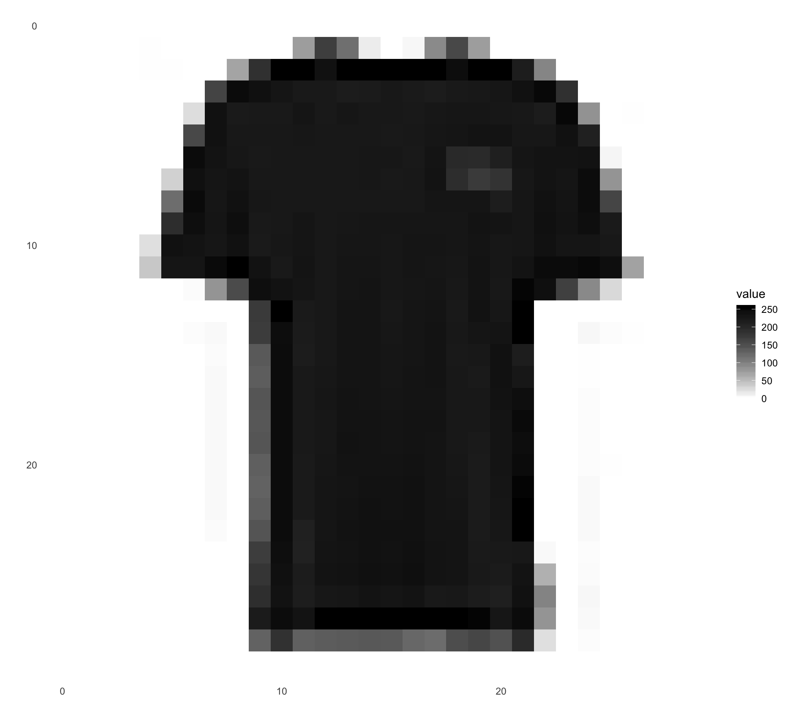
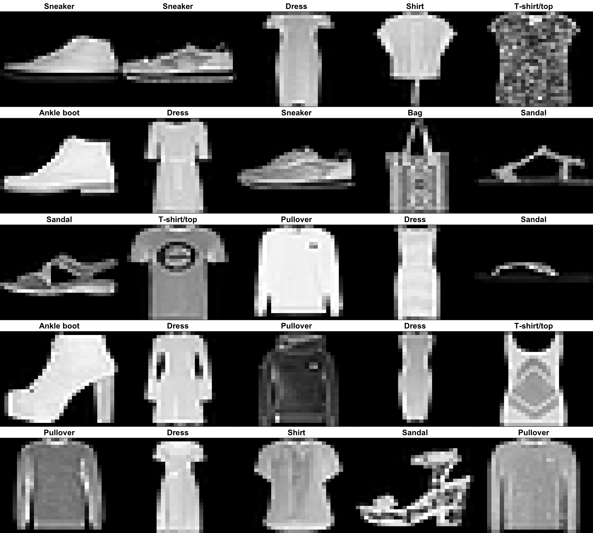

One of the most popular high-level libraries for building machine learning models is Keras. In addition to Keras, we have also used ggplot2 for creating visualizations:
As covered in the Problem section, the group used the MNIST Fashion dataset for training a model to classify clothing items:
We can also prepare a vector of the possible classes the model will attempt to classify samples as:
classes = c('T-shirt/top',
'Trouser',
'Pullover',
'Dress',
'Coat',
'Sandal',
'Shirt',
'Sneaker',
'Bag',
'Ankle boot')According to official documentation, there should be 60000 28 x 28 training images along with 60000 labels and 10000 28 x 28 test images along with 10000 test labels:
dim(train_images)## [1] 60000 28 28dim(train_labels)## [1] 60000dim(test_images)## [1] 10000 28 28dim(test_labels)## [1] 10000We can also plot a sample image of an item:
sample_image <- as.data.frame(train_images[666, , ])
colnames(sample_image) <- seq_len(ncol(sample_image))
sample_image$y <- seq_len(nrow(sample_image))
sample_image <- gather(sample_image, "x", "value", -y)
sample_image$x <- as.integer(sample_image$x)
p <- ggplot(sample_image, aes(x=x, y=y, fill=value)) +
geom_tile() +
scale_fill_gradient(low="white", high="black", na.value=NA) +
scale_y_reverse() +
theme_minimal() +
theme(panel.grid=element_blank()) +
theme(aspect.ratio=1) +
xlab("") +
ylab("")
print(p)
Neural networks deal more gracefully with values that are scaled to be between 0 and 1. The reason is large ranges, such as 0 to 255, can cause large perturbations in the output of the network because the values are large:
train_images <- train_images/255
test_images <- test_images/255We can inspect a subset of the images to make sure they are in the expected format and have the correct labels based on visual inspection:
par(mfcol=c(5,5))
par(mar=c(0, 0, 1.5, 0), xaxs='i', yaxs='i')
for(i in 42:66) {
img <- train_images[i, , ]
img <- t(apply(img, 2, rev))
image(1:28, 1:28, img, col=gray((0:255)/255), xaxt='n', yaxt='n',
main=paste(classes[train_labels[i] + 1]))
}